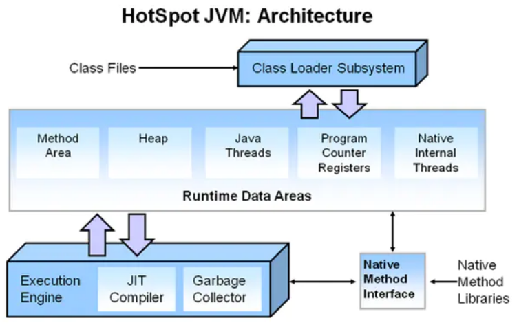
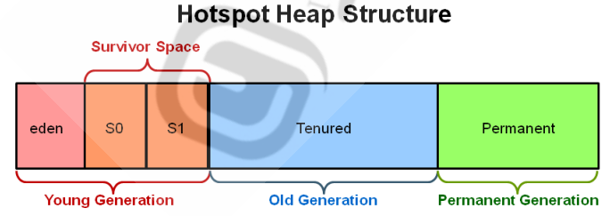
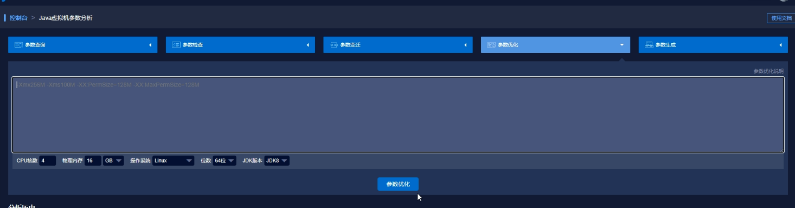

Tomcat性能优化
本文主要介绍了Tomcat运行环境，总结了对优化Tomcat有帮助的参数。
Tomcat的运行依赖于JVM（Java Virtual Machine），从虚拟机的角度把Tomcat的调整分为外部环境JVM 调优 和 Tomcat 自身调优两部分。
JVM简介
JVM组成

JVM可大致分为：类加载子系统，运行时数据区，执行引擎，本地方法接口。
其中Runtime Data Areas（运行时数据区）是最消耗内存的空间,是Tomcat优化的关注重点。而该部分的heap在虚拟机启动时创建,存放创建的所有对象信息。如果对象无法申请到可用内存将抛出OOM异常，是主要优化和监控的目标。
GC垃圾回收器
垃圾指在堆内存中不再使用但仍占用着内存的过去创建对象。需要即使进行垃圾回收,从而释放内存空间给其它对象使用。 垃圾确定方法有引用计数和根搜索(可达)算法。
垃圾回收算法主要有：
- 标记-清除 Mark-Sweep：造成内存碎片,效率较高
- 标记-压缩 (压实)Mark-Compact：没有内存碎片，内存整理消耗导致效率相对低下
- 复制 Copying：内存分为大小相同两块区域。没有内存碎片，效率较高，浪费内存
heap内存结构

年轻代：eden区保持新创建的对象，eden存满后启动GC，标记存活对象，存活对象复制survivor的S0区（也可以是S1区），eden剩余空间全部清除。再次触发GC时，标记eden区和之前存放的S0区中存活对象，全部存入S1区，清空eden和S0区。重复新建对象，触发GC时，对象会来回在S0、S1间转移，eden区总是被清空。
老年代：如果对象一直存活，复制次数达到阈值，将复制到Tenured区长久保存。当Tenured区也满了之后，将触发full GC，即所有区域都会触发垃圾回收。
根据年轻代频繁写入、垃圾回收的特点，老年代区域大、垃圾回收较少的特点，采用适合的算法，年轻代eden为标记-清除，存活区为标记-压缩，老年代为标记-压缩。
JVM内存部分参数
-为标准选项
-X为稳定非标准选项
-XX为不稳定选项
-Xms 设置应用程序初始使用的堆内存大小（年轻代+老年代）
-Xmx 设置应用程序能获得的最大堆内存
-XX:NewSize 设置初始新生代大小
-XX:MaxNewSize 设置最大新生代内存空间
-Xss 设置每个线程私有的栈空间大小,依据具体线程大小和数量
-XX:SurvivorRatio Eden区与Survivor区的大小比值
-XX:+UseFastAccessorMethods 原始类型的快速优化
-XX:MaxTenuringThreshold 垃圾最大年龄
-XX:+AggressiveOpts 加快编译
-XX:+UseBiasedLocking 锁机制的性能改善
-XX:SoftRefLRUPolicyMSPerMB 每兆堆空闲空间中SoftReference的存活时间
-XX:+UseParallelGC Full GC采用parallelMSC
-XX:ParallelGCThreads 并行收集器的线程数
-XX:+UseParallelOldGC 老年代垃圾收集方式为并行收集
-XX:+UseConcMarkSweepGC 使用CMS内存收集
-XX:CMSFullGCsBeforeCompaction 多少次后进行内存压缩
-XX:+CMSIncrementalMode 设置为增量模式
Tomcat优化配置
JVM内存空间优化
配置修改位置：/安装路径/tomcat/bin/catalina.sh
可以通过JAVA_OPTS=“” 来添加JVM环境参数
1 | |
Tomcat线程池调整
配置修改位置： /安装路径/tomcat/conf/server.xml
在连接器部分中添加
1 | |
通过测试调整参数
关于以上多个参数具体数值需要反复尝试，使用压力测试工具，观察后进行调整。如使用PerfMa的heapdump。可以在网页中通过图形化界面进行参数分析和优化。

本博客所有文章除特别声明外，均采用 CC BY-SA 4.0 协议 ，转载请注明出处！